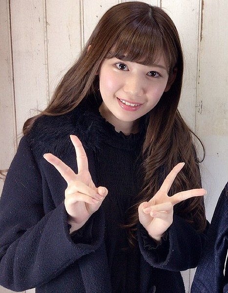
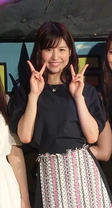
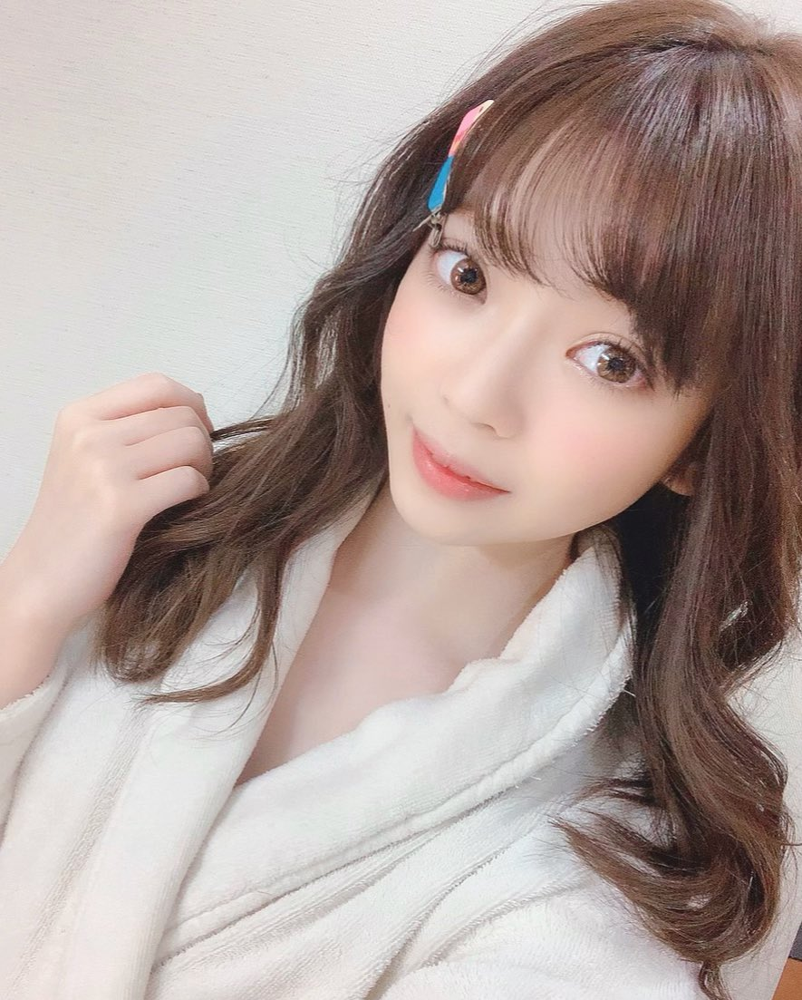

明里紬
明里紬（日語：明里つむぎ，1998年3月31日－）
日本的AV女優及寫真偶像，神奈川縣出身明里紬原為寫真偶像，在許多資料中都提及到興趣是宅在家裡上網，但在臺灣Youtuber「安安邊緣子」的影片中親自否認了自己不是宅女，也表示從未說過此類的話。她聲稱雖然自己有密集恐懼症，但還是可以親自料理。2017年1月，她在個人寫真DVD上首次亮相，同年2月17日透過個人推特上宣布加入日本AV片商「IdeaPocket」，並以專屬女優身分出道，而選擇此職業的原因是滿足好奇心。
2018年2月，明里紬入圍《DMM成人獎2018》競逐「最優秀新人女優獎」，卻只於同年5月19日獲得《DMM成人獎2018》「特別主持人獎 - 武井壯獎」殊榮；9月7日在推特宣布成為「Attackers」專屬女優。2019年4月，她再度回到「IdeaPocket」以專屬女優身分，拍攝成人影片而變成雙專屬女優。
另外，明里紬與AV女優橋本有菜是好朋友，經常結伴同遊。
Google Jable Wikipedia
樱空桃
櫻空桃（日語：桜空 もも／さくら もも Sakura Momo，1996年12月3日－）是日本AV女優、原寫真偶像，所屬經紀公司為T-POWERS。
Google Jable Wikipedia
水卜櫻
水卜櫻（日語：水卜さくら／みうら さくら Miura Sakura，1997年11月30日－），日本的AV女優，現為「MOODYZ」專屬女優。所屬於「ARCHE Production」事務所。暱稱「ミトちゃん」。
Google Jable Wikipedia
水森翠
水森翠（日語：みずもり すい，1996年12月21日－）
生於東京。他的愛好和特長是古典芭蕾、健康促進和田徑運動。
我從小學就開始手淫，我用電動按摩器和蠟筆小新作為配菜。
覺得自己是處女很尷尬，15歲的時候我和朋友的前輩第一次體驗了。
初中的時候，我在電視節目中看到一個有紋身的女人，決定把自己也包括在內。我先把“Family”放在脖子後面，後來我全身都紋了很多紋身。我將紋身視為藝術。脖子前側，有一朵小指誓言的圖案，將違背諾言的痛苦刻在身上。
成為AV女優的原因是星探。起初，我想知道我是否可以做到，部分原因是我有很多紋身。
有紋身的 AV 女優往往是愛好者 ，但 2020 年 4 月發行的《水森水，Creampie Sex 40 from Morning to Night》等 AV 買家在 FANZA 郵購樓層每天排名第 7。在中得到了廣泛的歡迎。(Google Translate)
Google Jable Wikipedia
槙泉奈
槙泉奈（日語：槙 いずな，2001年1月27日－）
生於東京。所屬經紀公司為T-POWERS。
Google Jable Wikipedia
佐倉絆
佐倉絆（日語：佐倉絆，1988年9月14日－）
是日本的AV女優，出生於栃木縣，寫真偶像出身，為HARVESTERS旗下所屬AV女優。2020年3月31日正式自AV產業引退。
- 與曾在同一家女僕咖啡廳工作的SKE48前成員松村香織是好朋友，即使在成為AV女優後，仍有很好的交情。
- 從小就熱愛動漫和遊戲，有著御宅族的一面。 因為喜歡薄櫻鬼的原田左之助，所以把愛犬(吉娃娃)命名為「左之助」。
- 自從還在當寫真偶像時以來就很喜歡自慰，並曾在多次採訪中透露自己有200多個「玩具」。
- 與一樣是AV女優的河西亞美是很好的朋友，甚至會互相稱呼對方為「Honey」。
Google Jable Wikipedia
日泉舞香
∞
日泉舞香 (日語：ひいずみ まいか / 別名：新美 かりん，--/--/--)
- 2018 年 11 月出道的日本色情明星。 他以多個名字活躍，主要是 Karin Niimi 和 Maika Hiizumi。
- 出現在 AV OPEN 2018 的業餘部分“僅限業餘大學生！與內褲之間的性交滴答作響 ● 寶被雞巴摩擦，臉紅發情！胯部被令人尷尬的汁液覆蓋！進入和陰道射精！！-AVOPEN2018 特別版 15最佳女大學生10小時拿下》（2月1日，臉紅的女生）進入並獲得業餘組第三名。 2020年12月，FRIDAY《意外聯合主演！10位最佳女演員以“大戲”獲得人氣演員的認可！》皮埃爾劍版第3名。
- 他的愛好和特長是看電影和烹飪。
- 出道的初衷是為了獲得搬家的資金，以拍寫真模特為目標，但考慮到她的性格，她成為了AV女優。 我的第一次經歷是和我 15-16 歲左右的同學在一起。 雖然他對性並不積極，但可能是受到分手男友的影響，M的氣質已經開花了。
- 我並不想成為一名AV女演員，但我喜歡工作本身，所以我想按照自己的節奏繼續下去。(Google Translate)
Google Jable Wikipedia